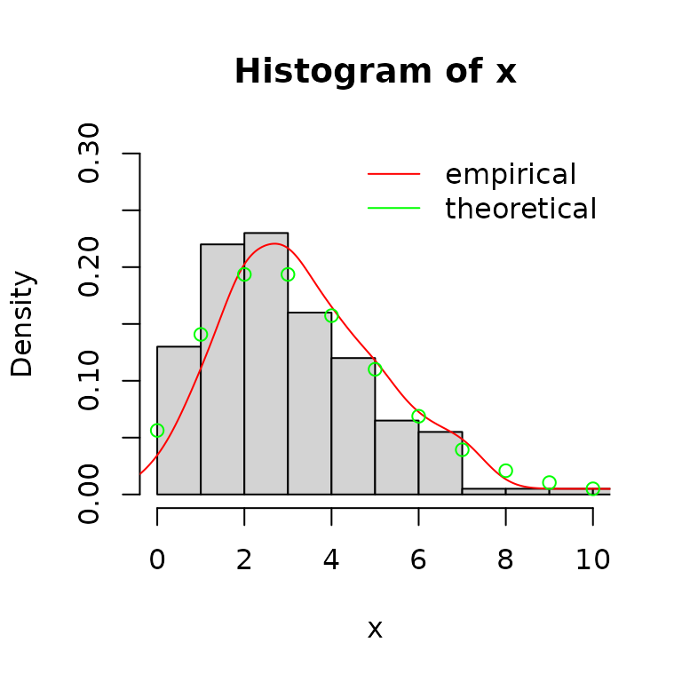

Which optimization algorithm to choose?
Marie Laure Delignette Muller, Christophe Dutang
2025-11-20
Source:vignettes/Optimalgo.Rmd
Optimalgo.Rmd1. Quick overview of main optimization methods
We present very quickly the main optimization methods. Please refer to Numerical Optimization (Nocedal & Wright, 2006) or Numerical Optimization: theoretical and practical aspects (Bonnans, Gilbert, Lemarechal & Sagastizabal, 2006) for a good introduction. We consider the following problem for .
1.1. Derivative-free optimization methods
The Nelder-Mead method is one of the most well known derivative-free methods that use only values of to search for the minimum. It consists in building a simplex of points and moving/shrinking this simplex into the good direction.
- set initial points .
- order points such that .
- compute as the centroid of .
- Reflection:
- compute the reflected point .
- if , then replace by , go to step 2.
- else go step 5.
- Expansion:
- if , then compute the expansion point .
- if , then replace by , go to step 2.
- else by , go to step 2.
- else go to step 6.
- Contraction:
- compute the contracted point .
-
if
,
then replace
by
,
go to step 2.
- else go step 7.
- Reduction:
- for , compute .
The Nelder-Mead method is available in optim. By
default, in optim,
,
,
and
.
1.2. Hessian-free optimization methods
For smooth non-linear function, the following method is generally used: a local method combined with line search work on the scheme , where the local method will specify the direction and the line search will specify the step size .
1.2.1. Computing the direction
A desirable property for is that ensures a descent . Newton methods are such that minimizes a local quadratic approximation of based on a Taylor expansion, that is where denotes the gradient and denotes the Hessian.
The consists in using the exact solution of local minimization
problem
.
In practice, other methods are preferred (at least to ensure positive
definiteness). The method approximates the Hessian by a matrix
as a function of
,
,
and then
solves the system
.
Some implementation may also directly approximate the inverse of the
Hessian
in order to compute
.
Using the Sherman-Morrison-Woodbury formula, we can switch between
and
.
To determine , first it must verify the secant equation or where and . To define the terms, we generally impose a symmetry and a minimum distance conditions. We say we have a rank 2 update if and a rank 1 update if $H_k = H_{k-1} + a u u^T $. Rank update is justified by the spectral decomposition theorem.
There are two rank-2 updates which are symmetric and preserve positive definiteness
- DFP minimizes
such that
:
- BFGS minimizes such that :
In R, the so-called BFGS scheme is implemented in
optim.
Another possible method (which is initially arised from quadratic problems) is the nonlinear conjugate gradients. This consists in computing directions that are conjugate with respect to a matrix close to the true Hessian . Directions are computed iteratively by for , once initiated by . are updated according a scheme:
- : Fletcher-Reeves update,
- : Polak-Ribiere update.
There exists also three-term formula for computing direction
for
.
A possible scheme is the Beale-Sorenson update defined as
and
if
otherwise
if
.
See Yuan (2006) for other well-known schemes such as Hestenses-Stiefel,
Dixon or Conjugate-Descent. The three updates (Fletcher-Reeves,
Polak-Ribiere, Beale-Sorenson) of the (non-linear) conjugate gradient
are available in optim.
1.2.2. Computing the stepsize
Let for a given direction/iterate . We need to find conditions to find a satisfactory stepsize . In literature, we consider the descent condition: and the Armijo condition: ensures a decrease of . Nocedal & Wright (2006) presents a backtracking (or geometric) approach satisfying the Armijo condition and minimal condition, i.e. Goldstein and Price condition.
- set e.g. 1, ,
-
Repeat until Armijo satisfied,
- .
- end Repeat
This backtracking linesearch is available in optim.
2. Numerical illustration with the beta distribution
2.1. Log-likelihood function and its gradient for beta distribution
2.1.1. Theoretical value
The density of the beta distribution is given by where denotes the beta function, see the NIST Handbook of mathematical functions https://dlmf.nist.gov/. We recall that . There the log-likelihood for a set of observations is The gradient with respect to and is where is the digamma function, see the NIST Handbook of mathematical functions https://dlmf.nist.gov/.
2.1.2. R implementation
As in the fitdistrplus package, we minimize the opposite
of the log-likelihood: we implement the opposite of the gradient in
grlnL. Both the log-likelihood and its gradient are not
exported.
lnL <- function(par, fix.arg, obs, ddistnam)
fitdistrplus:::loglikelihood(par, fix.arg, obs, ddistnam)
grlnlbeta <- fitdistrplus:::grlnlbeta2.2. Random generation of a sample
## [1] -133 317
hist(x, prob=TRUE, xlim=0:1)
lines(density(x), col="red")
curve(dbeta(x, 3, 3/4), col="green", add=TRUE)
legend("topleft", lty=1, col=c("red","green"), legend=c("empirical", "theoretical"), bty="n")
2.3 Fit Beta distribution
Define control parameters.
ctr <- list(trace=0, REPORT=1, maxit=1000)Call mledist with the default optimization function
(optim implemented in stats package) with and
without the gradient for the different optimization methods.
unconstropt <- fitbench(x, "beta", "mle", grad=grlnlbeta, lower=0)## BFGS NM CGFR CGPR CGBS L-BFGS-B NM-B G-BFGS
## 14 14 14 14 14 14 14 14
## G-CGFR G-CGPR G-CGBS G-BFGS-B G-NM-B G-CGFR-B G-CGPR-B G-CGBS-B
## 14 14 14 14 14 14 14 14In the case of constrained optimization, mledist permits
the direct use of constrOptim function (still implemented
in stats package) that allow linear inequality constraints
by using a logarithmic barrier.
Use a exp/log transformation of the shape parameters and to ensure that the shape parameters are strictly positive.
dbeta2 <- function(x, shape1, shape2, log)
dbeta(x, exp(shape1), exp(shape2), log=log)
#take the log of the starting values
startarg <- lapply(fitdistrplus:::startargdefault(x, "beta"), log)
#redefine the gradient for the new parametrization
grbetaexp <- function(par, obs, ...)
grlnlbeta(exp(par), obs) * exp(par)
expopt <- fitbench(x, distr="beta2", method="mle", grad=grbetaexp, start=startarg) ## BFGS NM CGFR CGPR CGBS G-BFGS G-CGFR G-CGPR G-CGBS
## 14 14 14 14 14 14 14 14 14
#get back to original parametrization
expopt[c("fitted shape1", "fitted shape2"), ] <- exp(expopt[c("fitted shape1", "fitted shape2"), ])Then we extract the values of the fitted parameters, the value of the corresponding log-likelihood and the number of counts to the function to minimize and its gradient (whether it is the theoretical gradient or the numerically approximated one).
2.4. Results of the numerical investigation
Results are displayed in the following tables: (1) the original
parametrization without specifying the gradient (-B stands
for bounded version), (2) the original parametrization with the (true)
gradient (-B stands for bounded version and -G
for gradient), (3) the log-transformed parametrization without
specifying the gradient, (4) the log-transformed parametrization with
the (true) gradient (-G stands for gradient).
| BFGS | NM | CGFR | CGPR | CGBS | L-BFGS-B | NM-B | |
|---|---|---|---|---|---|---|---|
| fitted shape1 | 2.665 | 2.664 | 2.665 | 2.665 | 2.665 | 2.665 | 2.665 |
| fitted shape2 | 0.731 | 0.731 | 0.731 | 0.731 | 0.731 | 0.731 | 0.731 |
| fitted loglik | 114.165 | 114.165 | 114.165 | 114.165 | 114.165 | 114.165 | 114.165 |
| func. eval. nb. | 15.000 | 47.000 | 191.000 | 221.000 | 242.000 | 8.000 | 92.000 |
| grad. eval. nb. | 11.000 | NA | 95.000 | 115.000 | 175.000 | 8.000 | NA |
| time (sec) | 0.007 | 0.004 | 0.034 | 0.041 | 0.056 | 0.003 | 0.011 |
| G-BFGS | G-CGFR | G-CGPR | G-CGBS | G-BFGS-B | G-NM-B | G-CGFR-B | G-CGPR-B | G-CGBS-B | |
|---|---|---|---|---|---|---|---|---|---|
| fitted shape1 | 2.665 | 2.665 | 2.665 | 2.665 | 2.665 | 2.665 | 2.665 | 2.665 | 2.665 |
| fitted shape2 | 0.731 | 0.731 | 0.731 | 0.731 | 0.731 | 0.731 | 0.731 | 0.731 | 0.731 |
| fitted loglik | 114.165 | 114.165 | 114.165 | 114.165 | 114.165 | 114.165 | 114.165 | 114.165 | 114.165 |
| func. eval. nb. | 22.000 | 249.000 | 239.000 | 138.000 | 40.000 | 92.000 | 433.000 | 345.000 | 255.000 |
| grad. eval. nb. | 5.000 | 71.000 | 67.000 | 43.000 | 6.000 | NA | 92.000 | 82.000 | 58.000 |
| time (sec) | 0.010 | 0.080 | 0.076 | 0.049 | 0.021 | 0.020 | 0.129 | 0.108 | 0.082 |
| BFGS | NM | CGFR | CGPR | CGBS | |
|---|---|---|---|---|---|
| fitted shape1 | 2.665 | 2.664 | 2.665 | 2.665 | 2.665 |
| fitted shape2 | 0.731 | 0.731 | 0.731 | 0.731 | 0.731 |
| fitted loglik | 114.165 | 114.165 | 114.165 | 114.165 | 114.165 |
| func. eval. nb. | 8.000 | 41.000 | 37.000 | 49.000 | 47.000 |
| grad. eval. nb. | 5.000 | NA | 19.000 | 39.000 | 33.000 |
| time (sec) | 0.014 | 0.004 | 0.008 | 0.013 | 0.011 |
| G-BFGS | G-CGFR | G-CGPR | G-CGBS | |
|---|---|---|---|---|
| fitted shape1 | 2.665 | 2.665 | 2.665 | 2.665 |
| fitted shape2 | 0.731 | 0.731 | 0.731 | 0.731 |
| fitted loglik | 114.165 | 114.165 | 114.165 | 114.165 |
| func. eval. nb. | 21.000 | 109.000 | 146.000 | 112.000 |
| grad. eval. nb. | 5.000 | 29.000 | 47.000 | 35.000 |
| time (sec) | 0.011 | 0.036 | 0.055 | 0.041 |
Using llsurface, we plot the log-likehood surface around
the true value (green) and the fitted parameters (red).
llsurface(min.arg=c(0.1, 0.1), max.arg=c(7, 3), xlim=c(.1,7),
plot.arg=c("shape1", "shape2"), nlev=25,
lseq=50, data=x, distr="beta", back.col = FALSE)
points(unconstropt[1,"BFGS"], unconstropt[2,"BFGS"], pch="+", col="red")
points(3, 3/4, pch="x", col="green")
We can simulate bootstrap replicates using the bootdist
function.
b1 <- bootdist(fitdist(x, "beta", method = "mle", optim.method = "BFGS"),
niter = 100, parallel = "snow", ncpus = 2)
summary(b1)## Parametric bootstrap medians and 95% percentile CI
## Median 2.5% 97.5%
## shape1 2.73 2.272 3.283
## shape2 0.75 0.652 0.888
3. Numerical illustration with the negative binomial distribution
3.1. Log-likelihood function and its gradient for negative binomial distribution
3.1.1. Theoretical value
The p.m.f. of the Negative binomial distribution is given by where denotes the beta function, see the NIST Handbook of mathematical functions https://dlmf.nist.gov/. There exists an alternative representation where or equivalently . Thus, the log-likelihood for a set of observations is The gradient with respect to and is where is the digamma function, see the NIST Handbook of mathematical functions https://dlmf.nist.gov/.
3.2. Random generation of a sample
#(2) negative binomial distribution
n <- 200
trueval <- c("size"=10, "prob"=3/4, "mu"=10/3)
x <- rnbinom(n, trueval["size"], trueval["prob"])
hist(x, prob=TRUE, ylim=c(0, .3), xlim=c(0, 10))
lines(density(x), col="red")
points(min(x):max(x), dnbinom(min(x):max(x), trueval["size"], trueval["prob"]),
col = "green")
legend("topright", lty = 1, col = c("red", "green"),
legend = c("empirical", "theoretical"), bty="n")
3.3. Fit a negative binomial distribution
Define control parameters and make the benchmark.
ctr <- list(trace = 0, REPORT = 1, maxit = 1000)
unconstropt <- fitbench(x, "nbinom", "mle", grad = grlnlNB, lower = 0)## BFGS NM CGFR CGPR CGBS L-BFGS-B NM-B G-BFGS
## 14 14 14 14 14 14 14 14
## G-CGFR G-CGPR G-CGBS G-BFGS-B G-NM-B G-CGFR-B G-CGPR-B G-CGBS-B
## 14 14 14 14 14 14 14 14
unconstropt <- rbind(unconstropt,
"fitted prob" = unconstropt["fitted mu", ] / (1 + unconstropt["fitted mu", ]))In the case of constrained optimization, mledist permits
the direct use of constrOptim function (still implemented
in stats package) that allow linear inequality constraints
by using a logarithmic barrier.
Use a exp/log transformation of the shape parameters and to ensure that the shape parameters are strictly positive.
dnbinom2 <- function(x, size, prob, log)
dnbinom(x, exp(size), 1 / (1 + exp(-prob)), log = log)
# transform starting values
startarg <- fitdistrplus:::startargdefault(x, "nbinom")
startarg$mu <- startarg$size / (startarg$size + startarg$mu)
startarg <- list(size = log(startarg[[1]]),
prob = log(startarg[[2]] / (1 - startarg[[2]])))
# redefine the gradient for the new parametrization
Trans <- function(x)
c(exp(x[1]), plogis(x[2]))
grNBexp <- function(par, obs, ...)
grlnlNB(Trans(par), obs) * c(exp(par[1]), plogis(x[2])*(1-plogis(x[2])))
expopt <- fitbench(x, distr="nbinom2", method="mle", grad=grNBexp, start=startarg) ## BFGS NM CGFR CGPR CGBS G-BFGS G-CGFR G-CGPR G-CGBS
## 14 14 14 14 14 14 14 14 14
# get back to original parametrization
expopt[c("fitted size", "fitted prob"), ] <-
apply(expopt[c("fitted size", "fitted prob"), ], 2, Trans)Then we extract the values of the fitted parameters, the value of the corresponding log-likelihood and the number of counts to the function to minimize and its gradient (whether it is the theoretical gradient or the numerically approximated one).
3.4. Results of the numerical investigation
Results are displayed in the following tables: (1) the original
parametrization without specifying the gradient (-B stands
for bounded version), (2) the original parametrization with the (true)
gradient (-B stands for bounded version and -G
for gradient), (3) the log-transformed parametrization without
specifying the gradient, (4) the log-transformed parametrization with
the (true) gradient (-G stands for gradient).
| BFGS | NM | CGFR | CGPR | CGBS | L-BFGS-B | NM-B | |
|---|---|---|---|---|---|---|---|
| fitted size | 57.333 | 62.504 | 57.337 | 57.335 | 57.335 | 57.333 | 58.446 |
| fitted mu | 3.440 | 3.440 | 3.440 | 3.440 | 3.440 | 3.440 | 3.440 |
| fitted loglik | -402.675 | -402.674 | -402.675 | -402.675 | -402.675 | -402.675 | -402.675 |
| func. eval. nb. | 2.000 | 39.000 | 2001.000 | 1001.000 | 1001.000 | 2.000 | 0.000 |
| grad. eval. nb. | 1.000 | NA | 1001.000 | 1001.000 | 1001.000 | 2.000 | NA |
| time (sec) | 0.001 | 0.003 | 0.253 | 0.203 | 0.204 | 0.002 | 0.004 |
| fitted prob | 0.775 | 0.775 | 0.775 | 0.775 | 0.775 | 0.775 | 0.775 |
| G-BFGS | G-CGFR | G-CGPR | G-CGBS | G-BFGS-B | G-NM-B | G-CGFR-B | G-CGPR-B | G-CGBS-B | |
|---|---|---|---|---|---|---|---|---|---|
| fitted size | 57.333 | 57.333 | 57.333 | 57.333 | 57.333 | 58.446 | 57.333 | 57.333 | 57.333 |
| fitted mu | 3.440 | 3.440 | 3.440 | 3.440 | 3.440 | 3.440 | 3.440 | 3.440 | 3.440 |
| fitted loglik | -402.675 | -402.675 | -402.675 | -402.675 | -402.675 | -402.675 | -402.675 | -402.675 | -402.675 |
| func. eval. nb. | 28.000 | 28.000 | 28.000 | 28.000 | 0.000 | 0.000 | 0.000 | 0.000 | 0.000 |
| grad. eval. nb. | 1.000 | 1.000 | 1.000 | 1.000 | NA | NA | NA | NA | NA |
| time (sec) | 0.009 | 0.002 | 0.002 | 0.001 | 0.002 | 0.003 | 0.003 | 0.002 | 0.003 |
| fitted prob | 0.775 | 0.775 | 0.775 | 0.775 | 0.775 | 0.775 | 0.775 | 0.775 | 0.775 |
| BFGS | NM | CGFR | CGPR | CGBS | |
|---|---|---|---|---|---|
| fitted size | 57.335 | 62.320 | 58.595 | 60.138 | 60.875 |
| fitted prob | 0.943 | 0.948 | 0.945 | 0.946 | 0.947 |
| fitted loglik | -402.675 | -402.674 | -402.675 | -402.674 | -402.674 |
| func. eval. nb. | 3.000 | 45.000 | 2501.000 | 2276.000 | 2272.000 |
| grad. eval. nb. | 1.000 | NA | 1001.000 | 1001.000 | 1001.000 |
| time (sec) | 0.005 | 0.003 | 0.275 | 0.267 | 0.268 |
| G-BFGS | G-CGFR | G-CGPR | G-CGBS | |
|---|---|---|---|---|
| fitted size | 57.333 | 57.333 | 57.333 | 57.333 |
| fitted prob | 0.943 | 0.943 | 0.943 | 0.943 |
| fitted loglik | -402.675 | -402.675 | -402.675 | -402.675 |
| func. eval. nb. | 18.000 | 44.000 | 39.000 | 39.000 |
| grad. eval. nb. | 1.000 | 3.000 | 3.000 | 3.000 |
| time (sec) | 0.007 | 0.002 | 0.002 | 0.002 |
Using llsurface, we plot the log-likehood surface around
the true value (green) and the fitted parameters (red).
llsurface(min.arg = c(5, 0.3), max.arg = c(15, 1), xlim=c(5, 15),
plot.arg = c("size", "prob"), nlev = 25,
lseq = 50, data = x, distr = "nbinom", back.col = FALSE)
points(unconstropt["fitted size", "BFGS"], unconstropt["fitted prob", "BFGS"],
pch = "+", col = "red")
points(trueval["size"], trueval["prob"], pch = "x", col = "green")
We can simulate bootstrap replicates using the bootdist
function.
b1 <- bootdist(fitdist(x, "nbinom", method = "mle", optim.method = "BFGS"),
niter = 100, parallel = "snow", ncpus = 2)
summary(b1)## Parametric bootstrap medians and 95% percentile CI
## Median 2.5% 97.5%
## size 57.33 57.33 57.33
## mu 3.46 3.24 3.72
4. Conclusion
Based on the two previous examples, we observe that all methods
converge to the same point. This is reassuring.
However, the number of function evaluations (and the gradient
evaluations) is very different from a method to another. Furthermore,
specifying the true gradient of the log-likelihood does not help at all
the fitting procedure and generally slows down the convergence.
Generally, the best method is the standard BFGS method or the BFGS
method with the exponential transformation of the parameters. Since the
exponential function is differentiable, the asymptotic properties are
still preserved (by the Delta method) but for finite-sample this may
produce a small bias.